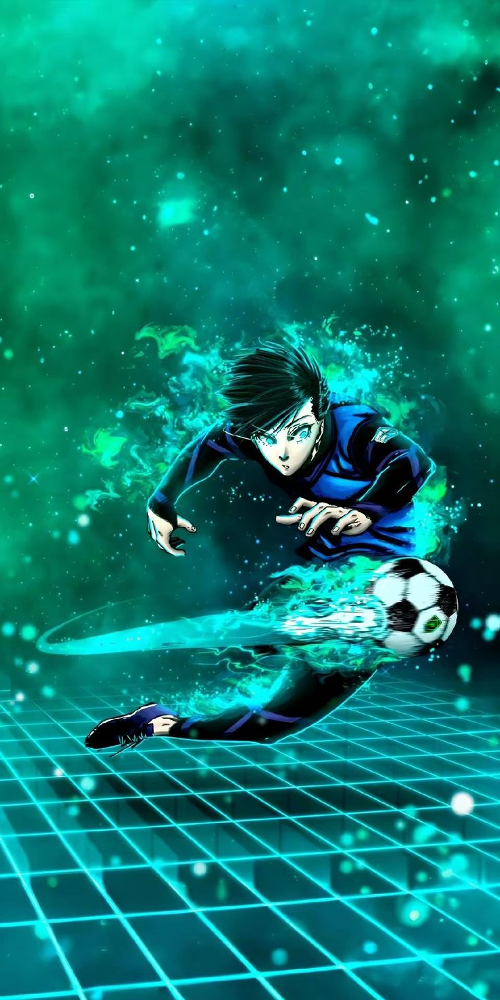

Rin Itoshi is the number 1 ranked striker in Blue Lock, characterized as a complete forward with elite shooting 98+, top tier spatial awareness, and Destroyer playstyle, allowing him to manipulate defenders and score from anywhere. He is a versatile genius who combines high-level physical stats with calculated, destructive, and analytical, intelligent soccer.


Ryusei Shidou in Blue Lock is a top tier poacher striker defined by elite physical strength, spatial awareness in the penalty box, and instinctive, acrobatic goal scoring. He excels at scoring from impossible angles using his body, boasting superior raw physicality over opponents, high speed reactions, and unmatched efficiency in the final third, especially during Flow.


Reo Mikage's stats in Blue Lock define him as a high level all rounder and copycat player, whose abilities revolve around versatility, adaptability, and, more recently, technical replication. His performance metrics generally hover around an A rank, with his stats increasing as he learns to better utilize his Chameleon style to copy other players' techniques.